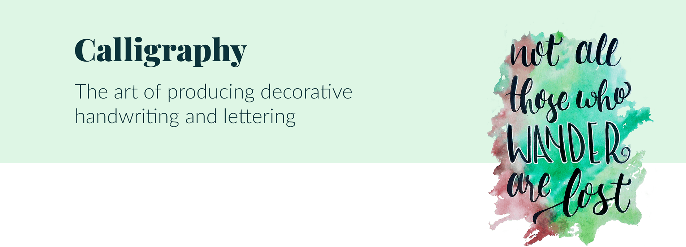

<!DOCTYPE html>
<html lang="en">
    <head>

        <meta charset="utf-8">
        <link rel="stylesheet" href="css/reset.css">
        <link rel="stylesheet" href="css/style.css">
        
        <meta name="viewport" content="width=device-width, initial-scale=1.0">

        <title>Marilia GilP - Interactive Media Designer</title>

    </head>

    <body>
        <div class="wrapper">

            <header>
                <div class="top">
                    <a href="index.html"></a>  
                    <div class="subtitle">Interactive media designer</div>
                </div>

                <!-- Start menu area -->
                <div class="topnav" id="myTopnav">
                    <nav>
                        <a href="index.html" class="active">Works</a>
                        <a href="about.html">About</a>
                        <a href="javascript:void(0);" class="icon" onclick="myFunction()">
                            </a>
                    </nav>
                </div>

            </header>

            <main>

                <div class="workabout">
                    
                </div>

                
                <div class="worktext">
                    <p>During my Bachelor’s Degree in Graphic Design, I took a few classes about calligraphy and always had the subject on my radar. I started to study calligraphy and hand lettering more in-depth in 2015 while I was working in an advertising agency and felt like I needed a creative outlet (a.k.a. de-stressor!).

                    <p>It was good to actually do some hand work on calligraphy because when you start to study this subject you stop seeing letters as merele written content and start realizing how it can transmit feelings and ideas. A title or a phrase gain a whole other level when its shapes are the focus.</p>

                    <p>By doing calligraphy, it has helped me to pay more attention to detail. Descenders, ascenders, bowls and swirls can imply more than what is written. Calligraphy has even enhanced my ability to create graphic design because now I handle the visual content with more specificity.</p>
                </div>

                <div class="workabout">
                    
                    <div class="photo-grid">
                        
                        <a href="#img1"></a>

                        <a href="#_" class="lightbox" id="img1"></a>
                        

                        <a href="#img2"></a>

                        <a href="#_" class="lightbox" id="img2"></a>
                        

                        <a href="#img3"></a>

                        <a href="#_" class="lightbox" id="img3"></a>
                        

                        <a href="#img4"></a>

                        <a href="#_" class="lightbox" id="img4"></a>
                    </div>

                    <div class="worktext">
                        <h2>Check more works:</h2>
                        <ul>
                            <li><a href="index.html">All</a></li>
                            <li><a href="works-cbeats.html">CB Eats app</a></li>
                            <li><a href="works-jl-tshirt.html">John Lewis T-shirt</a></li>
                            <li><a href="works-linkedin.html">Linkedin Job Seeker</a></li>
                            <li><a href="works-calligraphy.html" class="active">Calligraphy</a></li>
                        </ul>
                    </div>
            
                </div>
            </main>

            <footer>

                <!-- Start decoration footer area -->
                <div class="footer-area">
                    
                    <div class="social-icons">
                        <a href="mailto:mariliagilp@gmail.com" target=”_blank”></a>
                        <a href="https://www.linkedin.com/in/mariliagilp/" target=”_blank”></a>
                        <a href="https://www.instagram.com/mariliagilp/" target=”_blank”></a>
                    </div>

                    <div class="copyright">&copy; </div>
                </div> 
                <!-- End decoration footer area-->

            </footer>

        </div>
        <script>
            // Java Script for Menu 
            function myFunction() {
              var x = document.getElementById("myTopnav");
              if (x.className === "topnav") {
                x.className += " responsive";
              } else {
                x.className = "topnav";
              }
            }

        </script>
</body>
</html>